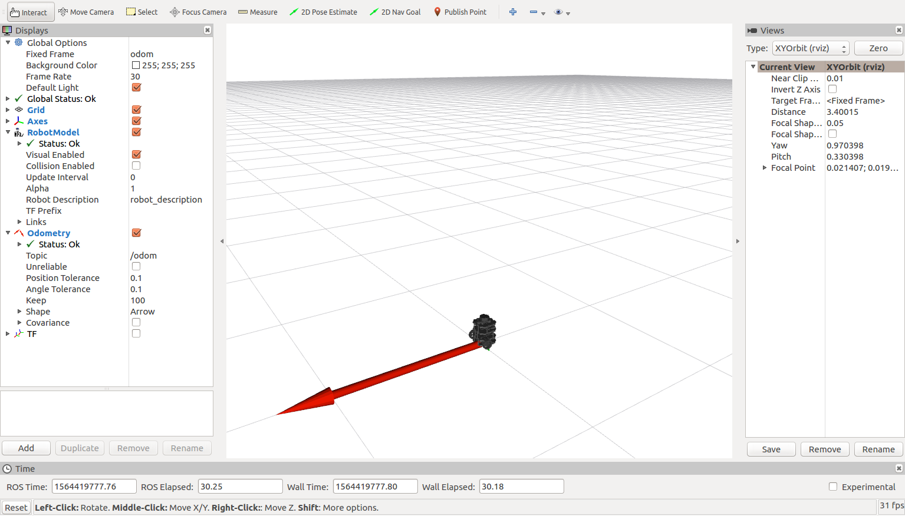
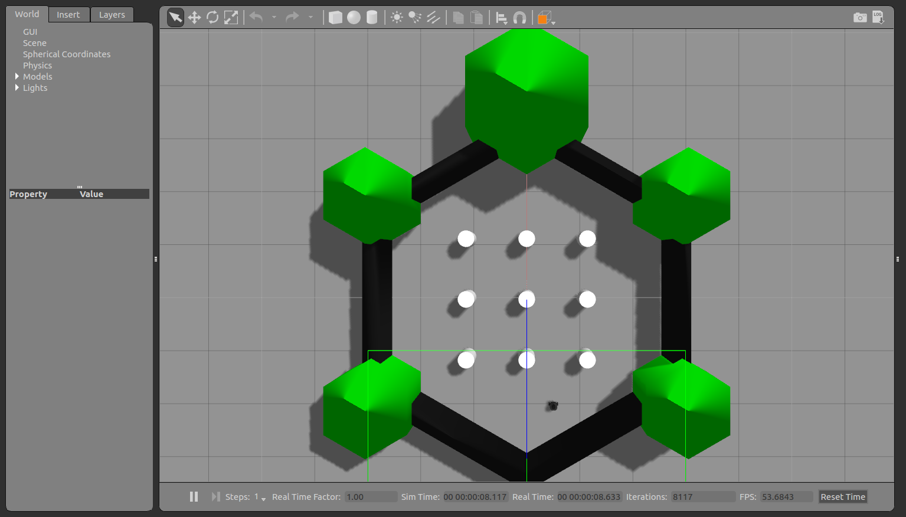

Note:
There is a fantastic guide on how to simulate Turtlebots starting on page 297 of
this
book and much of the information here is taken from there.
Simulation
One of the great things about ROS is the ease of simulating robots and how little code must be changed between
simulation and reality. The concept is that since ROS robots work by publishing and subscribing to topics, we
can create a simulated turtlebot which subscribes and publishes to those same topics. In this way, there is often
no need to make any changes to your program between a simulated Turtlebot and a real Turtlebot. In fact, if you
have a Turtlebot on the same ROS network as a simulation, the Turtlebot will mirror the movements of the simulated
Turtlebot. There are two ways of running simulations in ROS, either using RViz, which can do simple simulations,
or Gazebo
Fun fact: also the official simulator for the DARPA robotics challenge
,
the primary simulation program for ROS capable of simulating complex environments.
Using RViz
You can do some simulation of a Turtlebot using just the RViz visualization program and a fake Turtlebot 3 node,
which publishes and subscribes to the same topics as a real Turtlebot. To do this, the setup is similar to a
real Turtlebot. First, launch roscore:
$ roscore
If you get a complaint about "ROS_MASTER_URI [...] host is not set to this machine" or something similar, it means
that the environment variable which keeps track of the ROS master is pointing to a different IP address. To change
this, first kill roscore by typing CTRL+C in the terminal, then edit your .bashrc file by typing:
$ nano ~/.bashrc
Find the line that says "export ROS_MASTER_URI=..." and change the IP address (the string of numbers after the
"http://" and before the ":11311") so that it matches your IP address, which can be found either by opening a
new terminal and typing:
$ ifconfig
or by reading off the value of your ROS_HOSTNAME environment variable, likely right below your
ROS_MASTER_URI line in your .bashrc file. After you have updated the ROS_MASTER_URI, exit and save your .bashrc
file, then source it and restart roscore:
$ source ~/.bashrc
$ roscore
If this still does not work, I recommend trying the Troubleshooting page.
Next, you will need to start the fake Turtlebot node:
If everything worked, RViz should open and you should see a fake Turtlebot sitting in the middle of the seen.

The most likely errors here are either that you did not set the TURTLEBOT3_MODEL environment variable or
that you did not install the simulation packages. To set the environment variable, run:
$ export TURTLEBOT3_MODEL=burger
And try running the turtlebot3_fake node again. If this still does not work, you can try installing the
simulation packages:
$ cd ~/catkin_ws/src/
$ git clone https://github.com/ROBOTIS-GIT/turtlebot3_simulations.git
$ cd ~/catkin_ws && catkin_make
$ source .bashrc
Try running the turtlebot3_fake node again, and if it still does not work try checking out the
Troubleshooting page for common problems.
Now you can launch standard ROS nodes such as keyboard telemetry:
This is a rather basic simulation, as it lacks an interesting environment and things like laser scan
data, but can be useful for testing out simple programs. For a more capable simulation program, use Gazebo.
Using Gazebo
Gazebo provides a full physics and sensor simulation environment for ROS. To launch a simple Turtlebot3 simulation
run:
You should see a Turtlebot3 sitting in an obstacle course shaped like the Turtlebot logo.

The Gazebo environment should be mostly self-sufficient, but there can be issues if you did not se the
TURTLEBOT3_MODEL environment variable and you should have ROS_MASTER_URI pointing at your local computer.
To set the TURTLEBOT3_MODEL environment variable run:
$ export TURTLEBOT3_MODEL=burger
To change the ROS_MASTER_URI, follow these instructions:
First, kill Gazebo by hitting CTRL+C Hitting is more dramatic than typing
in the terminal, then edit your .bashrc file by typing:
$ nano ~/.bashrc
Find the line that says "export ROS_MASTER_URI=..." and change the IP address (the string of numbers after the
"http://" and before the ":11311") so that it matches your IP address, which can be found either by opening a
new terminal and typing:
$ ifconfig
or by reading off the value of your ROS_HOSTNAME environment variable, likely right below your
ROS_MASTER_URI line in your .bashrc file. After you have updated the ROS_MASTER_URI, exit and save your .bashrc
file, then source it and re-start Gazebo:
Now, you can just about follow the instructions on the Quickstart
page, except roscore and the packages on the Turtlebot have already been launched for you. For example,
to get the standard RViz output run:
As you can see, these are exactly the same as what you would do with a real Turtlebot (the last command is new,
but runs on the Turtlebot as well). In fact, most things you do with the Turtlebot can be done in the
simulation as well, such as SLAM, navigation, etc. To demonstrate how powerful this is, say you had a Turtlebot
running with a Jetson instead of a Pi and you wanted to simulate that, or you wanted to see how quickly something
ran on a Pi as compared to a desktop. Thanks to the pub/sub nature of ROS, you can simply have those devices
point to your workstation as the ROS master node and then run whatever you want to on those devices, since
as far as ROS is concerned there is no difference between the simulated Turtlebot and the real Turtlebot, and it
does not matter where the device running a ROS node is physically, or virtually, located so long as it is on the
same network. Simulating different sensors is a bit more difficult but there are ways to add custom sensors to a
Gazebo model. One shortcut is to use a robot model that already has the sensor you want to simulate. For example,
if you wanted to simulate a depth camera you could use the Turtlebot3 waffle instead of the burger variant
because the waffle comes with a depth camera.